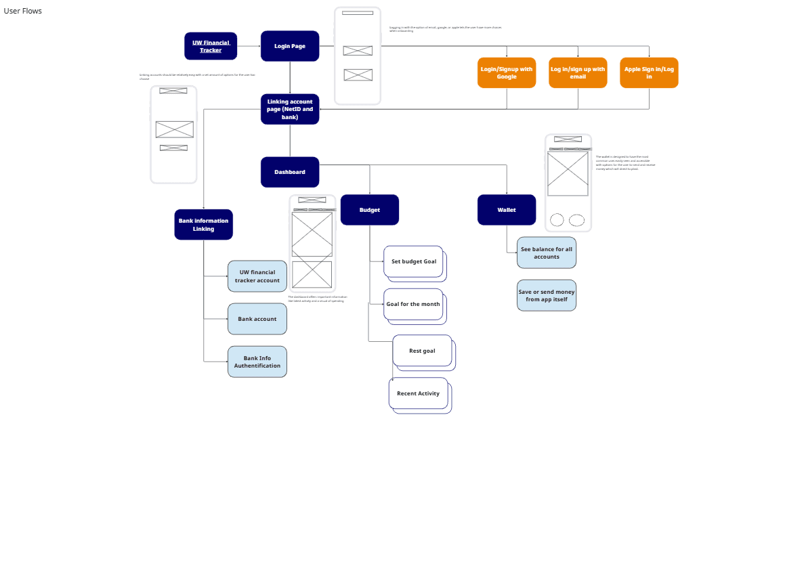
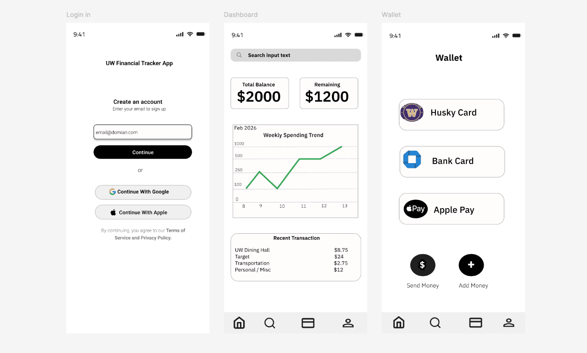
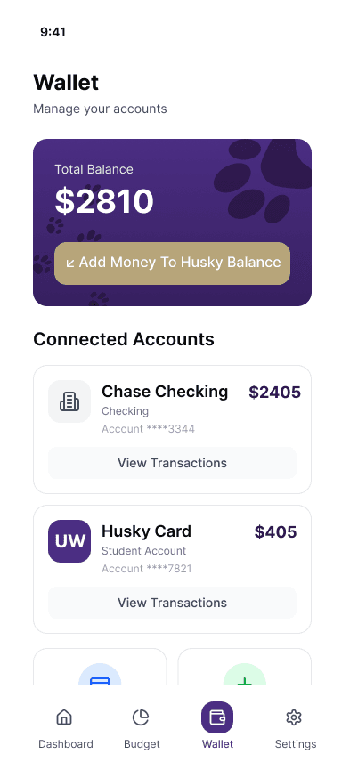
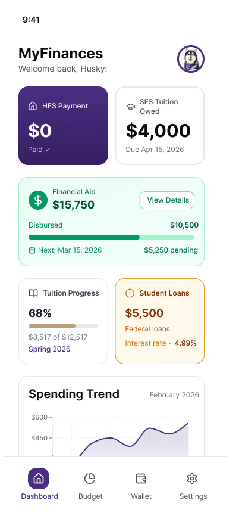
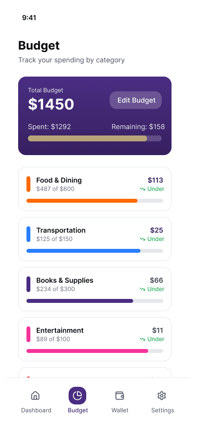
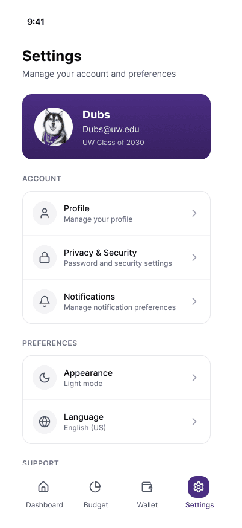
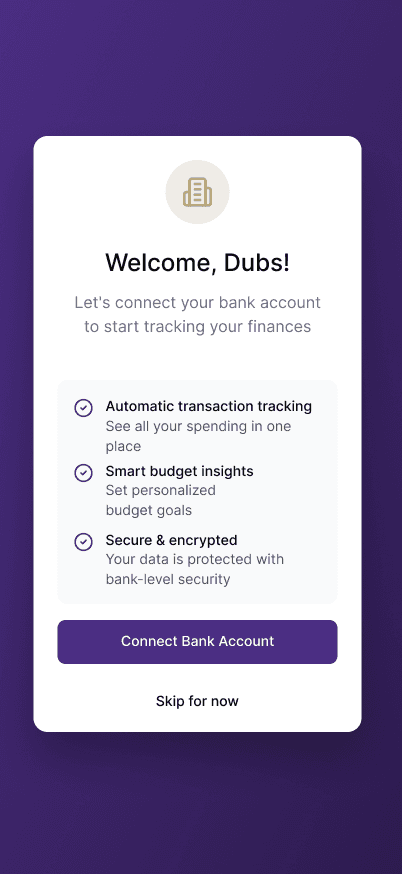

Featured case study / 2026
MyFinances
Helping college students understand, track, and manage their money.
I was the main UX designer and editor on a four-person team. My work covered the user flows, prototype, and UI, and we ran the usability sessions and survey together. Some screens use the project’s earlier names, Husky Index and UW Financial Tracker.
View the Figma prototype ↗01 / Understanding the problem

Understanding the problem
Limited income and school-related costs can make it hard to keep track of money. Our team focused on missed payments, overspending, under-saving, and the complexity of existing UW account management tools. We set out to design a simpler, student-centered financial tracker.
Who we were designing for
UW students balancing work and school expenses; students with limited financial literacy; and students managing irregular income or unexpected costs.
Competitive landscape
Wells Fargo
StrengthsClear balances, recent transactions, and multiple account types.
GapsLimited budgeting, goal tracking, and spending analysis.
YNAB
StrengthsDetailed budgeting, financial goals, and spending awareness.
GapsSubscription cost and a steeper learning curve for beginners.
PocketGuard
StrengthsAn understandable view of available money after expenses.
GapsRestricted features and less emphasis on student accounts or long-term goals.
Our opportunity: a free, simple tool that brings student finances into one view.
02 / Mapping the experience
Mapping the experience
We mapped the main paths through account setup, account linking, budgeting, and wallet management before refining the interface.


03 / Testing + iteration
Testing + iteration
Eight UW students navigated the Figma prototype in think-aloud sessions, completing tasks such as adding an expense, checking a wallet balance, and reviewing a budget, followed by a survey. Two more students completed the survey only.
The interface’s simplicity and consistency were positively received. The main opportunities were clearer onboarding, wallet actions, goals, and account management.
I’m not reporting survey ratings or task-success rates here, only what students said.
What students said
Onboarding
Vincent asked for a first-time introduction. Trevor found the initial onboarding easy to navigate.
Wallet clarity
Vincent found the wallet cluttered and the send/add-money actions unclear.
Financial goals
Trevor recommended a dedicated modal for setting goals.
Account management
Trevor wanted clearer ways to add and remove accounts.
What worked
Navigation felt straightforward to Vincent. Trevor appreciated the interface’s consistency and simplicity.
How the design responded
Onboarding
FeedbackFirst-time users needed more context.
Design responseThe final welcome screen introduces account connection and the app’s features.
Wallet
FeedbackActions felt cluttered or unclear.
Design responseThe final wallet groups accounts and labels the Husky balance action. This revision has not been re-tested.
Goals
FeedbackA clearer goal-setting interaction was requested.
Next stepA focused goal-setting modal. It isn’t part of the final screens shown here.
Accounts
FeedbackAdding and removing accounts needed clearer pathways.
Next stepClarify and test the add and remove account paths. The final screens shown here don’t cover the full flow.
Wallet, before and after
The wallet drew the clearest feedback: it felt cluttered and the Send and Add Money actions were unclear. The revision groups accounts and labels the action. It has not been re-tested.

04 / Final design
Final design
A Figma concept for student balances, tuition, aid, budgeting, and connected accounts—not a live banking integration.
How the screens answer the problem
Overspending
ProblemOverspending.
ResponseThe budget screen shows a total budget, spending progress, and category limits.
Complex UW tools
ProblemExisting UW account tools are complex.
ResponseOne dashboard shows tuition owed, financial aid, tuition progress, loans, and spending.
Scattered accounts
ProblemBalances and accounts live in separate places.
ResponseThe wallet groups connected accounts in one place.
Missed payments and under-saving are still open. Goal setting is a next step and isn’t part of the final screens shown here.




Supporting screens / Settings groups account preferences; Welcome adds context before connection. Security wording on these screens is placeholder copy.
05 / Reflection
Reflection
Outcome
The team delivered a tested Figma prototype covering the dashboard, budget, wallet, settings, and welcome screens. Testing led to a revised welcome screen and wallet. Goal setting and account management are still open, and the wallet revision hasn’t been re-tested.
What I’m taking forward
Testing showed me that a clean-looking financial screen can still leave actions unclear. Feedback shaped the welcome experience and wallet presentation, while goal setting and account-management pathways still need work. I’m taking a closer eye for wording and information hierarchy into my next project, and would re-test these flows before calling them resolved.